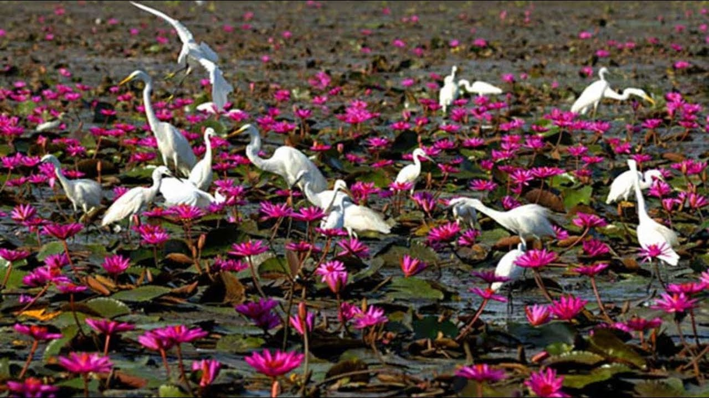

🌺 Đồng Tháp
Dong Thap Province
Khám phá xứ sở sông nước và hoa kiểng – Đồng Tháp. Học từ vựng, ngữ pháp và luyện tập qua 7 dạng bài tương tác.

🌿 Vườn quốc gia Tràm Chim
📖
Bài đọc: Dong Thap Province – The Land of Rivers and Flowers
🎙️ Giọng đọc & Tốc độ
🐢
🐇
0.85x
🗣️ Giọng:
📊 Tiến độ học tập
Từ vựng đã học0/97
Bài tập hoàn thành0/100
📈 Thống kê chi tiết
Từ đã học
0
Từ yêu thích
0
Điểm bài tập
0
Thời gian học (ph)
0
💡
Mẹo học
Bấm vào từ để tra nghĩa ngay trong bài.